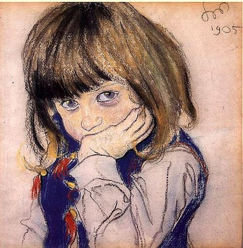
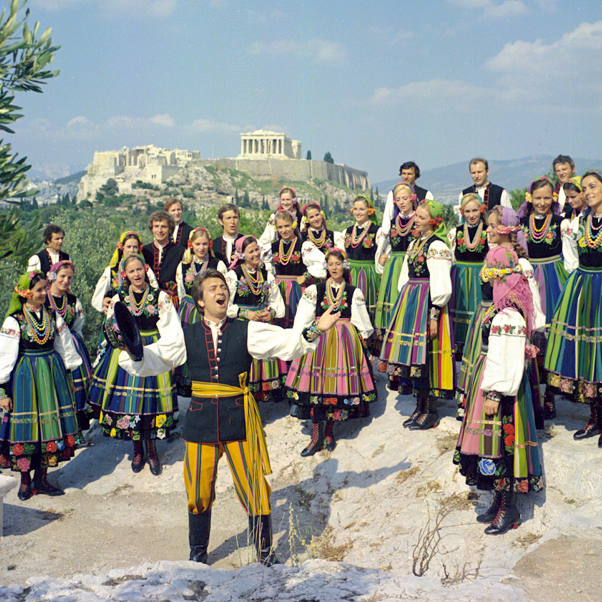
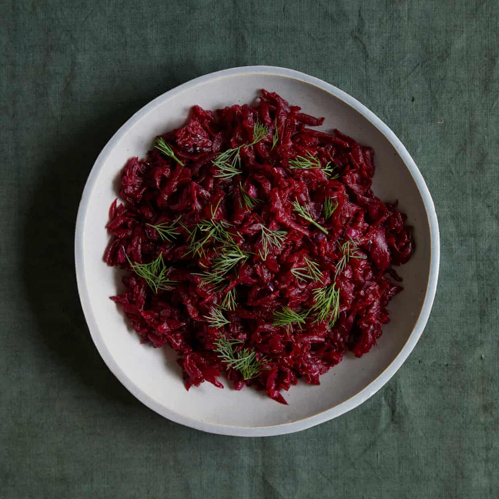

See
Spotlight on Wyspiański
Learn about one of the most important Polish artists of the 20th century through a close-up look at his pastel work, thanks to Google Arts & Culture.
 Stanisław Wyspiański: a life revealed in pastelsListen
Mazowsze
Mazowsze is one of the largest artistic ensembles in the world, drawing from the abundance of Poland’s national dances, songs, chants, and traditions. For the full effect, be sure to look up one of their stage performances on YouTube - but the music alone will amaze you!
 Listen to Mazowsze on SpotifyTaste
An autumn feast
Ren Behan, author of Wild Honey and Rye: Modern Polish Recipes, shares three warming recipes.
 Recipes for a Polish autumn feast, on the Guardian